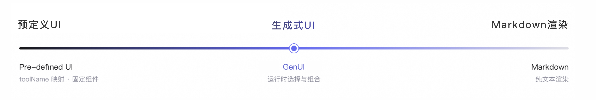
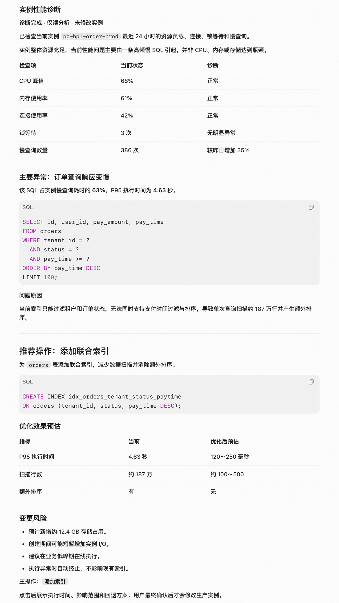
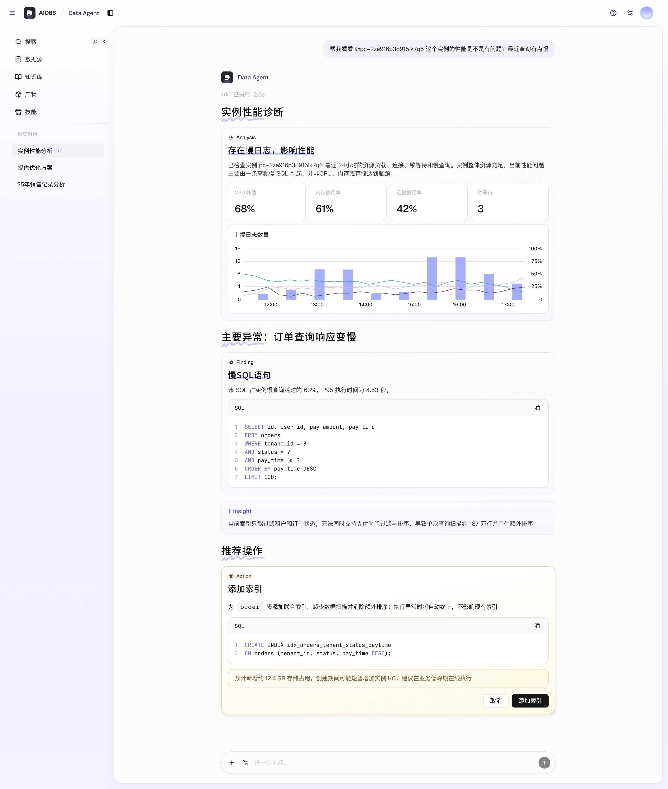
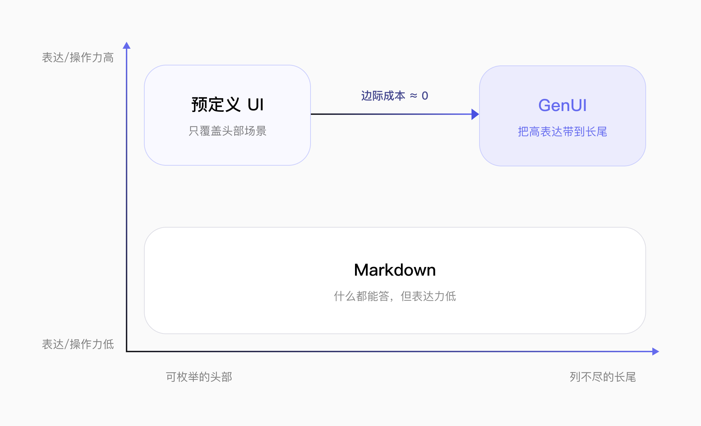
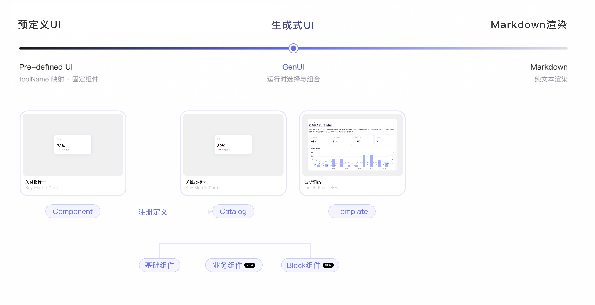
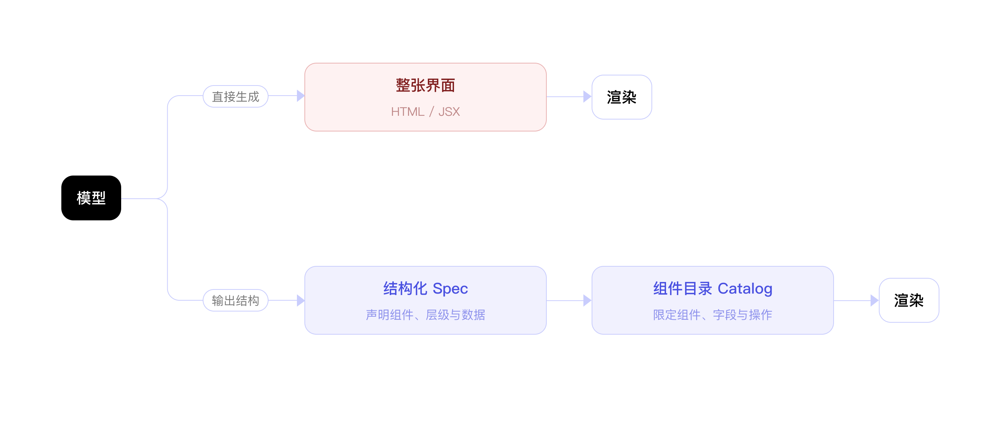
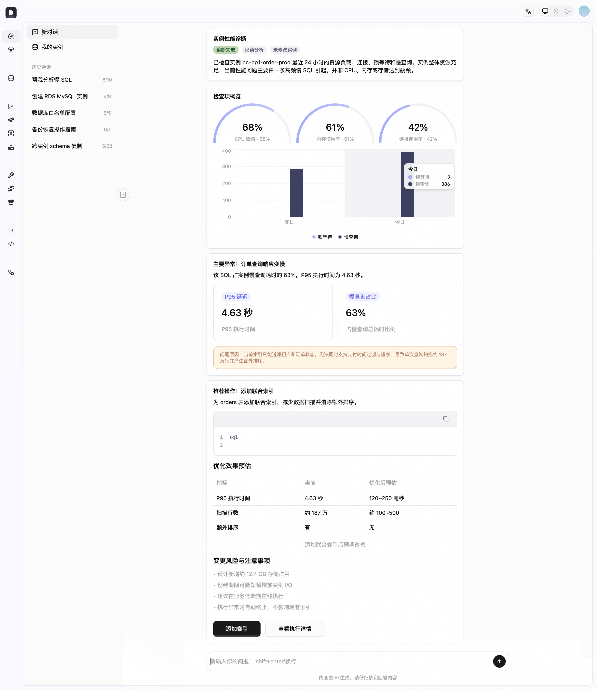
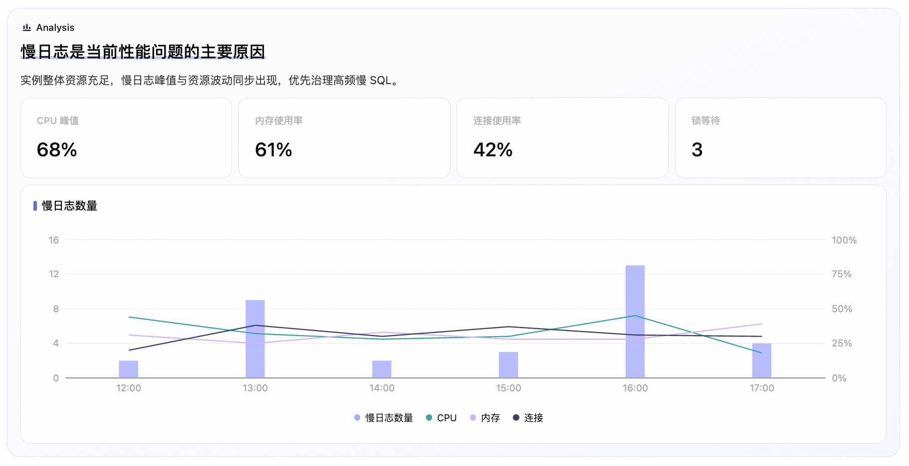
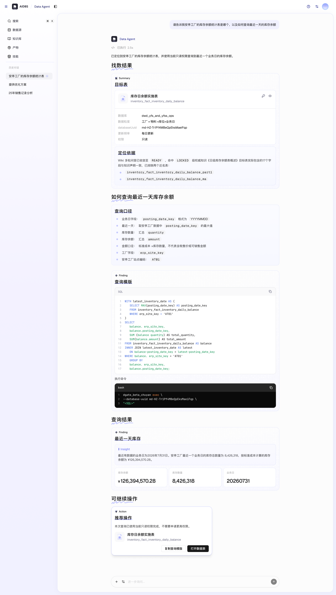
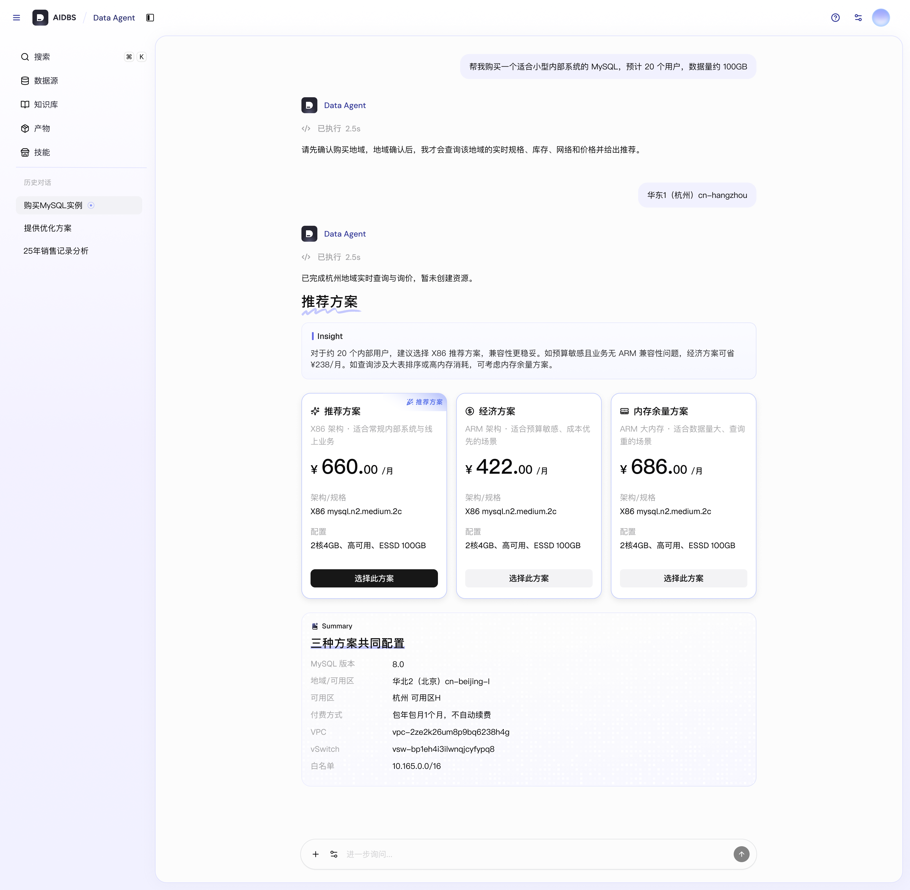

GenUI：让 Agent 从给出答案走向交付结果¶
一、背景与问题驱动¶
真正卡住体验的不是模型答得好不好，而是结果交付的“最后一公里”： 用户拿到的是一段文字，却需要做的是比较证据、判断风险、然后动手操作。
在 Agentic 用云、管云场景里，用户对结果的要求不止“读懂”： 用户需要横向比较几组证据，判断某个操作的风险，然后在当前上下文里直接把动作执行掉。 现有的两种表达方式均具有局限性：
-
纯文本 擅长解释和开放表达，但一旦需要对比多组指标、定位异常时间点、或者发起一个带确认的操作，它的组织能力和操作能力都不够。
-
固定页面 擅长承载稳定、高频的流程，但它必须提前设计；而 Agent 在运行时产出的结果形态是长尾的，无法提前穷举出对应的页面。
GenUI 补上了这段“最后一公里”：由 Agent 依据本次任务的真实结果，动态组织结论、证据和可执行操作， 让用户在对话里看懂发生了什么，并直接继续完成任务。

Markdown

GenUI

二、GenUI 的设计思想¶
GenUI（Generative UI，生成式 UI）是一套机制：让 Agent 在运行时依据任务上下文和业务结果， 在受约束的范围内动态组织内容、组件与操作，交由客户端渲染成界面。 它的产物是界面，但它本身是“生成 + 约束 + 渲染”的一条链路，而不是某一张具体的页面。
它不替代自然语言，也不替代固定页面。三者的分工是清晰的： 自然语言负责开放表达与解释，固定页面负责稳定高频的既定流程， GenUI 把富表达和富操作延伸到无法提前穷举的长尾任务。

共享设计资产：约束 Agent “能用什么”和“该怎么用”¶
Agent 的生成自由度需由资产约束，否则一致性无从谈起。CloudAI GenUI 把这些约束沉淀为一套共享设计资产， 与具体协议无关，由适配层再翻译成各协议的数据契约：

CloudAI 设计资产
| 资产 | 约束什么 | 说明 |
|---|---|---|
| Catalog | “能用什么” | 本次任务可用的组件清单及其数据与操作契约，是生成的硬边界。包含通用基础组件、业务组件、语义组合组件（Block） |
| Template | “通常怎么组织” | 按常见任务意图给出推荐的信息结构与示例结构，帮助 Agent 收敛组织方式 |
| 使用规则 | “该怎么用” | 信息层级、组件选择、风险提示与操作确认等规则，避免随意拼装 |
“Catalog” 一词在协议侧也存在（例如 A2UI 用 catalog 表示客户端已声明的可用组件类型集合）。 本文中 GenUI Catalog 指跨协议共享的设计资产， 协议侧 catalog 指由适配层从它生成的、面向某个具体协议与渲染器的组件清单。
最终界面仍由 Agent 根据本次任务的上下文与业务结果动态生成。 之所以“动态”不等于“不可控”，是因为确定性并不来自生成过程，而来自它的三重约束： Catalog 白名单限定可用元素、Schema 校验拦截非法结构、 客户端可信组件独占渲染实现。灵活性归 Agent，确定性归客户端。
为什么是声明式，而不是生成界面代码¶
GenUI 的核心不是让模型直接产出 HTML、JavaScript 或 JSX，而是让 Agent 用结构化数据声明 “需要呈现什么”，再由客户端决定“具体如何呈现”。
直接生成界面代码有两个绕不过去的问题：一是输出空间是开放的，品牌一致性和交互边界都难以约束； 二是它把模型生成的内容直接送进了可执行边界。面向生产系统，Agent 的输出需要是 声明式 的、限定在已知元素内、并且能在渲染前被校验——这就是选择结构化 UI 描述的原因。

这一方式遵循三项原则：
-
业务结果与界面表达解耦：业务结果是事实源，协议数据只负责如何呈现，可以随上下文重新组织。
-
表达语义与视觉实现解耦：Agent 选择指标、证据、风险和操作等语义，品牌、布局、样式和交互由客户端的可信组件实现。
-
设计知识与技术框架解耦：Component 语义、Block、Template 意图和规则作为共享设计知识，再由适配层转成不同协议的数据契约。
三、关键特性与优势¶
设计资产提升 GenUI 生成质量¶
json-render、A2UI 提供生成与渲染机制，shadcn 提供基础组件，但仅有协议和基础组件时，信息层级、组件组合与操作边界仍主要依赖 Agent 临时组织。我们通过 Block、增量 Catalog、Template 与使用规则将设计经验带入生成过程，使 Agent 在动态组织内容的同时，生成结构更清晰、体验更一致、操作边界更明确的产品界面。
Before：基于 shadcn 基础组件直出生成效果

After：接入设计资产后的效果

从呈现结果到完成任务¶
GenUI 不只展示业务结果。当任务需要用户继续参与时，界面可以提供输入、选择、确认和操作入口，并将用户操作回传给 Agent，继续驱动业务执行与界面更新。用户无需离开当前上下文，就能从理解结果自然进入下一步操作，持续推进任务。
请至钉钉文档查看附件《钉钉录屏_2026-08-31 181443_20260831181517.mp4》。
Template示例
输出可校验，问题可追踪¶
Agent 输出的是结构化协议数据，而不是可执行的 HTML / JavaScript / JSX。数据先经 Schema 校验，再映射为可信的客户端组件。 这带来三件事：结构问题（未知组件、字段类型错误、引用缺失）在渲染前就能被拦下； 脚本注入与不可预期交互的风险被显著降低；协议数据本身是可记录、可比对的产物，为回放和问题定位留出了接口。
在流式场景下，校验粒度是按消息、按节点进行的：渲染器逐条消费增量消息，边校验边渲染， 未通过校验的节点降级或跳过，而不是等整屏数据齐备后才开始渲染。
::: 🌰 Json Render Case
::: Spec
{
"root": "insight",
"elements": {
"insight": {
"type": "InsightBlock",
"props": {
"tag": "analysis",
"title": "慢日志是当前性能问题的主要原因",
"summary": "实例整体资源充足，慢日志峰值与资源波动同步出现，优先治理高频慢 SQL。"
},
"children": [
"metrics",
"evidence"
]
},
"metrics": {
"type": "Grid",
"props": {
"columns": 4,
"gap": "sm",
"className": null
},
"children": [
"cpu",
"memory",
"connections",
"locks"
]
},
"cpu": {
"type": "MetricCard",
"props": {
"badgeText": "CPU 峰值",
"title": "68%",
"description": null
}
},
"memory": {
"type": "MetricCard",
"props": {
"badgeText": "内存使用率",
"title": "61%",
"description": null
}
},
"connections": {
"type": "MetricCard",
"props": {
"badgeText": "连接使用率",
"title": "42%",
"description": null
}
},
"locks": {
"type": "MetricCard",
"props": {
"badgeText": "锁等待",
"title": "3",
"description": null
}
},
"evidence": {
"type": "ChartGroup",
"props": {
"title": "慢日志数量",
"layout": "single"
},
"children": [
"health-chart"
]
},
"health-chart": {
"type": "ComboChart",
"props": {
"data": [
{
"time": "12:00",
"slowLogs": 2,
"cpu": 44,
"memory": 31,
"connections": 20
},
{
"time": "13:00",
"slowLogs": 9,
"cpu": 32,
"memory": 25,
"connections": 38
},
{
"time": "14:00",
"slowLogs": 2,
"cpu": 28,
"memory": 33,
"connections": 30
},
{
"time": "15:00",
"slowLogs": 3,
"cpu": 30,
"memory": 28,
"connections": 37
},
{
"time": "16:00",
"slowLogs": 13,
"cpu": 45,
"memory": 28,
"connections": 31
},
{
"time": "17:00",
"slowLogs": 4,
"cpu": 18,
"memory": 39,
"connections": 30
}
],
"categoryKey": "time",
"barSeries": {
"key": "slowLogs",
"label": "慢日志数量",
"colorToken": "chart-1"
},
"lineSeries": [
{
"key": "cpu",
"label": "CPU",
"colorToken": "chart-4"
},
{
"key": "memory",
"label": "内存",
"colorToken": "chart-3"
},
{
"key": "connections",
"label": "连接",
"colorToken": "chart-2"
}
],
"height": 240,
"showGrid": true,
"showLegend": true,
"xAxisInterval": null,
"leftDomain": [
0,
16
],
"rightDomain": [
0,
100
],
"rightUnit": "%"
}
}
}
}

::: :::四、运行机制与数据流¶
对于需要用户继续操作的任务，运行时由两条方向相反的数据通道共同形成闭环：Server → Client 负责交付界面数据，Client → Server 负责回传交互事件。前者让结果可理解，后者让用户操作继续驱动业务执行与界面更新。
通道 A
Server → Client：界面数据¶
Agent Server 依据业务结果、共享设计资产和目标协议生成界面数据：json-render 交付 UI Spec，A2UI 交付协议消息。Client 负责校验、解析状态；Renderer 根据 Registry 中的映射组织并渲染 CloudAI 组件。
通道 B
Client → Server：交互事件¶
用户操作被组装为 Action Event，连同必要状态回传。鉴权、执行与审计一律发生在服务端——界面上的确认只是意图表达，不构成授权。执行结果若改变界面，再经通道 A 回流。
sequenceDiagram
actor User as 用户
participant Client as Client / Renderer
participant Server as Agent Server
participant System as 业务系统
User->>Client: 提交任务
Client->>Server: 请求与任务上下文
Server->>System: 调用业务工具
System-->>Server: 返回业务结果
Note over Server: 共享 GenUI 资产 + 目标协议适配器
Server->>Server: 组装生成上下文并生成界面数据
Server-->>Client: 通道 A：界面数据<br/>json-render UI Spec / A2UI Messages
Client->>Client: 校验数据、解析状态<br/>按 Registry 映射并渲染
Client-->>User: 展示 CloudAI 组件界面
opt 任务需要用户继续操作
User->>Client: 选择、填写或确认
Note over Client,Server: 界面确认表达用户意图<br/>不能替代服务端授权
Client->>Server: 通道 B：交互事件<br/>Action Event + 必要状态
Server->>System: 身份校验、权限判断、执行与审计
System-->>Server: 返回执行结果
opt 执行结果需要更新界面
Server-->>Client: 通道 A：新的 UI Spec / 增量消息
Client->>Client: 更新状态并重新渲染
Client-->>User: 展示更新结果
end
end
具体传输方式由协议和业务宿主决定。A2UI 可以通过流式消息持续更新 Surface；json-render 不限定网络传输方式，由宿主负责传递 Spec 与交互事件。 两者共享的是设计语义与使用规则，不是同一份可直接互换的 JSON。
五、应用场景¶
GenUI 是 Agentic 用云、管云的体验基座，帮助 Agent 将动态业务结果转化为可理解、可操作的界面。以下是三个数据库AIDBS产品中的落地场景：
➊ 诊断与运维
呈现诊断摘要、异常指标、证据、方案对比与高风险操作确认

➋ 数据查询与业务分析
动态组织结论、数据对象、知识依据、指标、图表和查询入口

➌ 售卖
在对话中完成需求澄清、方案选择、参数调整、确认和下单全流程

六、边界与限制¶
GenUI 的价值域是长尾任务。把它用到不该用的地方，代价是稳定性和成本； 对它的能力做过强假设，代价是信任。
什么时候不该用 GenUI¶
-
稳定、高频、强流程的操作：走固定页面。这类流程的最优形态可以被提前设计，没有必要在运行时重新组织。
-
纯解释性、开放式的回答：走自然语言。为一段解释套上组件只会增加噪声。
-
强合规、强事务、字段极多的复杂配置：走控制台。这类界面对校验规则和状态机的要求超出生成式组织的可靠区间。
能力边界¶
-
结构可校验，事实不可校验：Schema 能拦住未知组件与字段错误，拦不住被编造的数值或不成立的结论。数值必须来自业务系统返回，结论需要可溯源的证据，必要时由业务侧做二次核对。
-
界面确认不等于授权：所有鉴权、执行与审计都在服务端完成；客户端的确认交互只表达用户意图。
-
成本与延迟是真实约束：Spec 体积直接影响首屏时间与 Token 成本，复杂界面依赖流式生成与增量更新才能获得可接受的感知性能。
-
跨协议不可直接互换：共享的是设计语义与使用规则；不同协议的数据契约由适配层各自生成。
-
依赖的协议本身仍在演进：A2UI 目前仍处于活跃演进阶段（稳定线为 v0.9 系列，v1.0 为候选版本），OpenUI 生态同样在迭代。因此 GenUI 采取“资产稳定、适配层承接变化”的策略，把协议波动隔离在业务语义之外。
七、技术路线与后续演进¶
我们的路线策略是共享资产、兼容多种技术路径：Component、Block、Catalog、Template 与使用规则保持稳定， 由适配层对接不同的数据契约与 Renderer。
以下是三条主要技术路径：
| 路径 | 形态 | 状态 | 当前进展 | 下一步 |
|---|---|---|---|---|
| json-render | UI Spec + 渲染器 | 已打通 | 生成、校验、渲染链路闭环 | 拓展真实业务验证 |
| A2UI | 声明式 UI 协议（流式 JSON 消息） | 进行中 | 已在业务场景完成验证，CloudAI 设计资产适配中 | 完成 Catalog 与组件映射 |
| OpenUI（OpenUI Lang） | 生成式 UI 框架 + 面向 LLM 的行式 DSL | 规划中 | 已纳入兼容规划，尚未接入 | 开展技术验证与 CloudAI 资产映射 |
后续重点评估四个维度：
-
生成与体验：结构有效率、业务完整度、组件选择和任务完成体验；
-
交互与性能：流式生成、增量更新、多轮状态、首屏时间和 Token 成本；
-
安全与可观测：Schema 校验、权限审计、容错降级、链路追踪和回放；
-
兼容与接入：资产覆盖度、适配维护成本、跨端复用和业务接入成本。
八、术语解释¶
| 术语 | 含义 |
|---|---|
| Agent Server | 理解意图、调用业务工具、并生成界面数据的服务端。所有鉴权、执行与审计都在这里发生。 |
| Client / Renderer | 接收协议数据、完成校验与状态解析、并把节点渲染为本地组件的客户端与渲染器。 |
| Registry | 协议中的组件类型到本地组件实现的注册映射表，是客户端侧的白名单落点。 |
| Spec | json-render 中描述一屏界面的结构化数据：root 指定入口，elements 以扁平字典 + id 引用组织节点树。 |
| Surface | A2UI 中承载组件的画布单元（如主视图、侧栏、弹窗），可被增量消息持续更新。 |
| Action Event | 客户端把用户的选择、填写、确认或操作连同当前状态组装成的事件，回传服务端触发执行。 |
| CloudAI 组件 | 客户端侧经过设计与安全审核的可信组件库，是所有 GenUI 界面的唯一渲染实现来源。 |
| Schema 校验 | 渲染前对协议数据做的结构校验：组件是否已知、字段类型是否正确、引用是否完整。不校验业务事实。 |